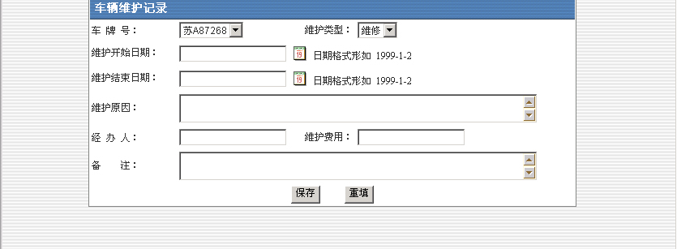

车辆管理
“车辆管理”共分为“车辆使用申请”、“车辆使用查询”、“车辆信息管理”、“车辆维护管理”、“车辆信息管理”和“驾驶员管理”六个部分
A.车辆使用申请模块可以申请车辆，并将自己的申请按照待批申请、已准申请、使用中车辆和未准申请分类列出，方便用户查询和管理自己的申请，被批准的申请具有短信提醒功能。

B．车辆使用查询模块即可按照待批申请、已准申请、使用中车辆和未准申请分类查询，也可按照指定条件查询。
C．车辆使用管理模块用来管理所有用户已提交的申请，按照待批申请、已准申请、使用中车辆和未准申请分类列出，方便用户管理。
D．车辆维护管理分为车辆维护记录添加和查询两部分。车辆维护记录添加可以新建车辆维护记录，如下分别是维护记录管理的图片：
